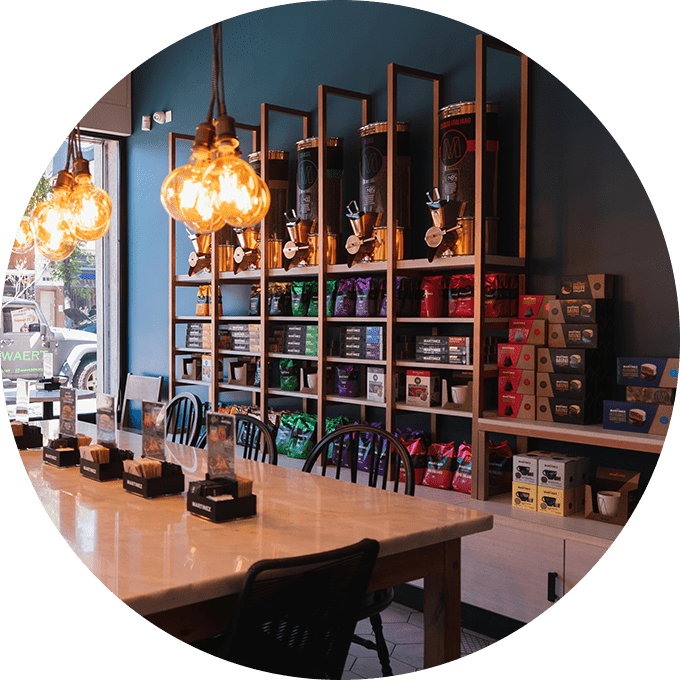
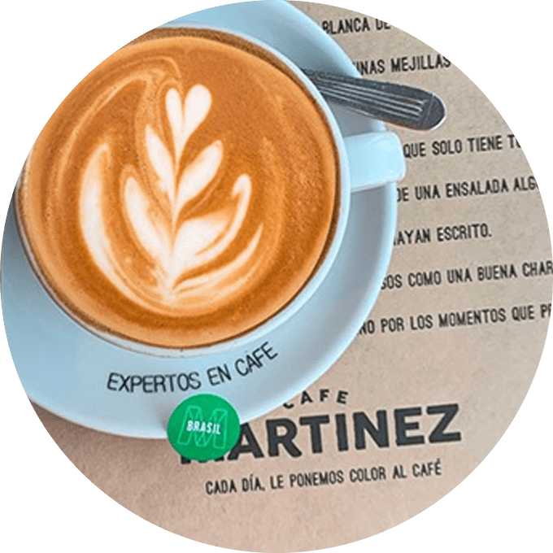

|
En "CAFÉ MARTÍNEZ" Creemos que el éxito del desarrollo como
cadena se
debe exclusivamente al éxito de cada franquiciado en particular, por eso hemos creado un sistema
de
trabajo volcado totalmente a colaborar con el franquiciado en el logro de sus objetivos.
|
NUESTRAS SUCURSALES se seleccionan cuidadosamente, con un sentido definido, en forma consensuada
con
cada franquiciado, eligiendo estratégicamente su ubicación y muy especialmente al franquiciado
que
la manejará, para así alcanzar la mayor posibilidad de éxito en cada punto de venta.
|

|
|  |
HOY LA CADENA cuenta con una propuesta de productos que abarca todos los horarios y se adapta a
todos los climas y a los diferentes países, con altos estándares de calidad en producto y
atención,
lo que nos hace una marca altamente competitiva en cualquier parte del mundo.
|